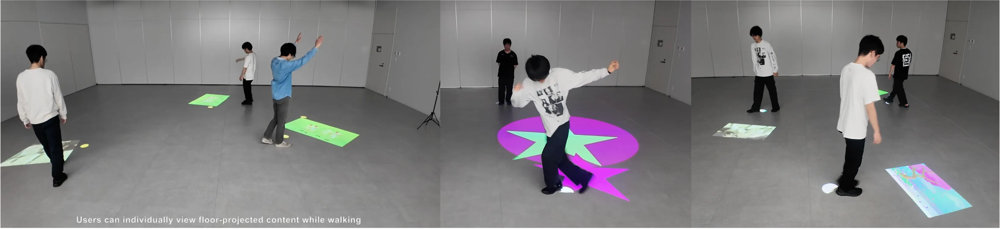
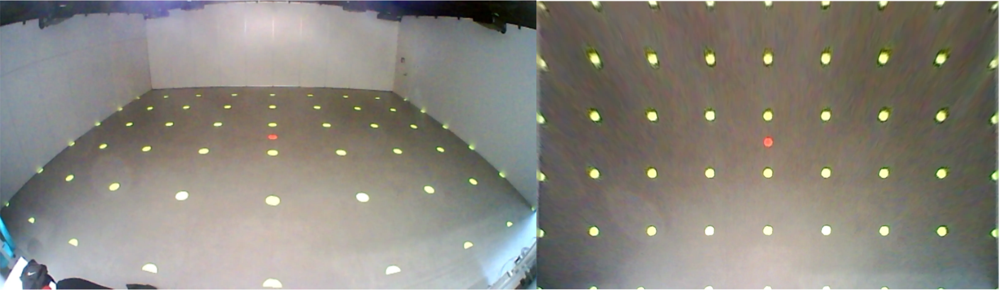
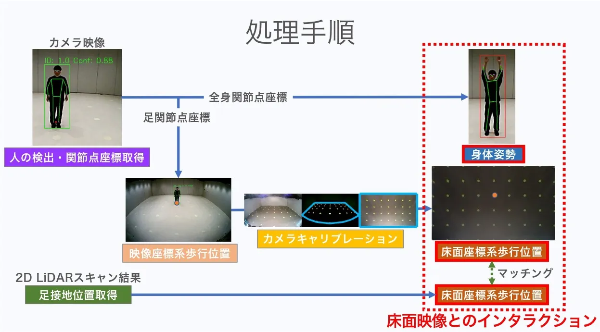

LiViMotion
歩行位置と身体動作に基づく、個人ごとの床面映像とのインタラクション

インタラクション, 床面映像, ジェスチャ認識, センサフュージョン, カルマンフィルタ, 2D LiDAR
使用技術
- C++ (OpenGL, OpenCV, 2D LiDAR, プロセス間通信)
- Python (OpenCV, Ultralytics YOLOv11, プロセス間通信)
役割(研究)
GitHub リポジトリ: LiviMotion
概要
LiViMotionは、歩行者一人ひとりに合わせた床面映像を提示し、身体動作によって映像とインタラクションできるシステムです。歩行位置や移動方向に応じて映像が追従するだけでなく、腕を上げるといった動作に応じて映像が変化します。 本システムでは、2D LiDARによる歩行者追跡とカメラによる身体動作認識を組み合わせ、カルマンフィルタとハンガリアンアルゴリズムを用いて両センサのデータを統合しています。これにより、複数人が存在する環境でも、各ユーザに対して個別の映像体験を提供できます。 エンターテインメント用途だけでなく、身体動作を利用した情報提示や災害時の避難誘導などへの応用も想定しています。
床面映像とのインタラクション
LiViMotionでは、ユーザの身体動作に応じて床面映像がリアルタイムに変化します。歩行中に手を挙げると、その動作を認識し、ユーザの足元へ映像エフェクトを表示します。右手・左手・両手のどれを挙げたかによって異なる演出を行うことができ、星や雪の結晶などの映像がユーザに追従しながら表示されます。 これにより、単に映像の上を歩くだけでなく、自身の身体動作によって映像を操作する体験を実現しています。
カメラのキャリブレーション

センサフュージョン
